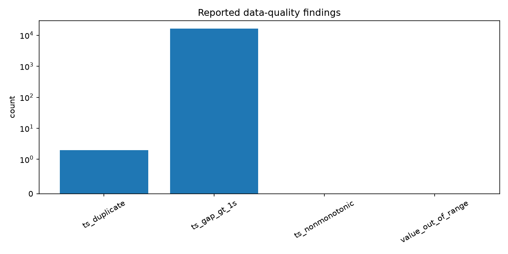
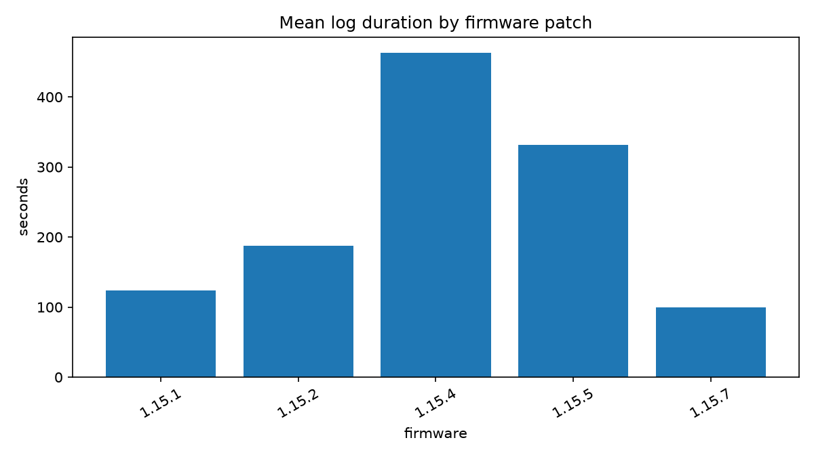

This report evaluates configured limits over the checksum-pinned public corpus. It is not a vehicle certification or controller-performance analysis.
Corpus provenance: 20 public PX4 Flight Review log identifiers from corpus/manifest.json (SHA-256 1f56c868fedf154822fd27da0420492814a20512bf066896f3dafe949ba66184). Raw ULogs are not redistributed.
| requirement_id | total | evaluable | pass | fail | not_evaluable | param_missing | param_disabled | param_changed_in_flight | signal_missing | window_missing | insufficient_samples | quality_fail |
|---|---|---|---|---|---|---|---|---|---|---|---|---|
| REQ-BATT-002-REMAIN | 20 | 20 | 19 | 1 | 0 | 0 | 0 | 0 | 0 | 0 | 0 | 0 |
| REQ-BATT-003-VOLT | 20 | 20 | 19 | 1 | 0 | 0 | 0 | 0 | 0 | 0 | 0 | 0 |
| REQ-CRUISE-001 | 20 | 18 | 17 | 1 | 2 | 0 | 0 | 0 | 0 | 2 | 0 | 0 |
| REQ-GEOFENCE-001 | 20 | 0 | 0 | 0 | 20 | 0 | 20 | 0 | 0 | 0 | 0 | 0 |
| REQ-GPS-001 | 20 | 20 | 20 | 0 | 0 | 0 | 0 | 0 | 0 | 0 | 0 | 0 |
| REQ-LAND-001 | 20 | 19 | 11 | 8 | 1 | 0 | 0 | 0 | 0 | 0 | 1 | 0 |
| REQ-VIB-001 | 20 | 13 | 3 | 10 | 7 | 0 | 0 | 0 | 0 | 0 | 7 | 0 |
Open the interactive per-log drill-down · Raw verdicts · Resolved signal aliases


Thresholds resolve from each log's initial parameters through ordered aliases. Disabled sentinel values and parameters changed in flight produce explicit non-evaluable verdicts. Public logs may omit required topics, and the corpus is not representative of all PX4 vehicles or operations.